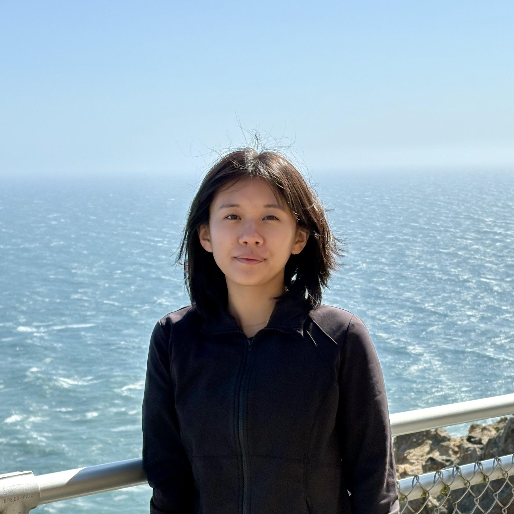
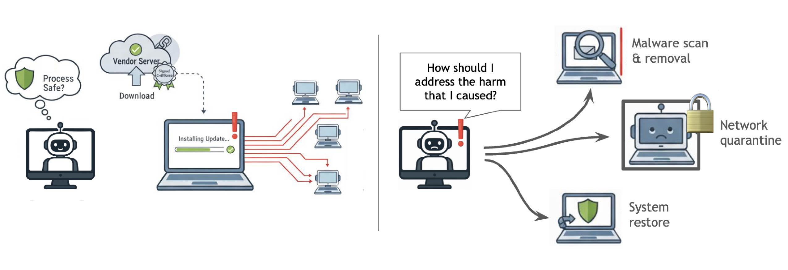
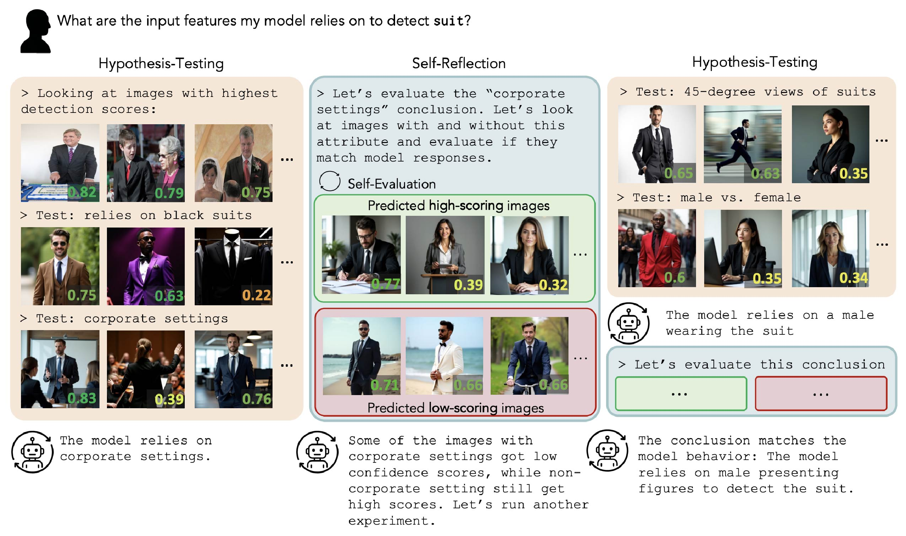
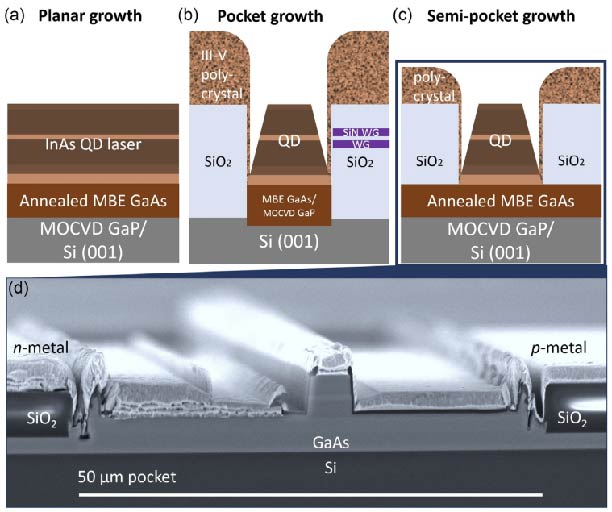
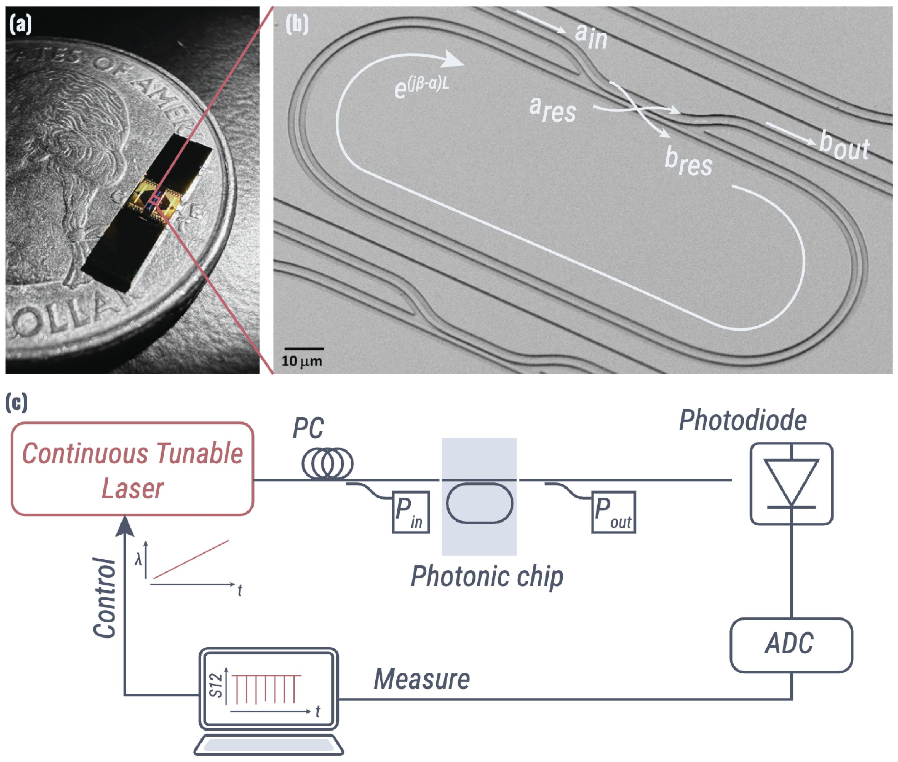
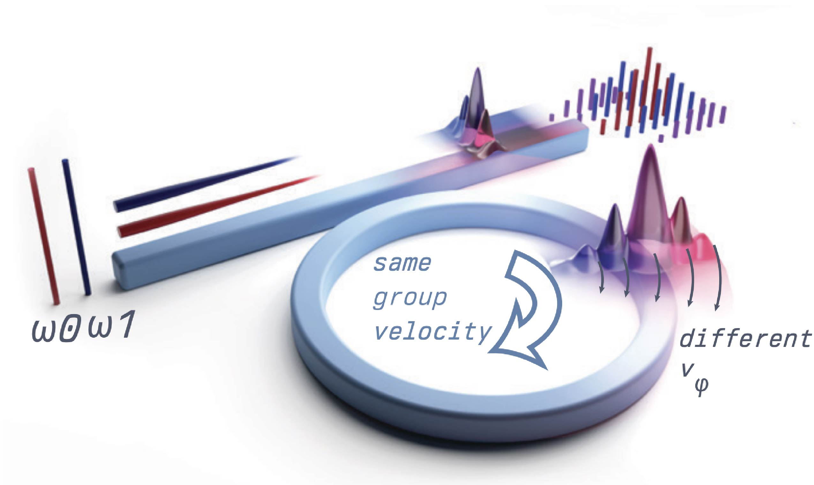

|
Christy Li
I am an undergrad at MIT studying CS and Physics. Currently, I'm researching automated harm remediation for computer use agents as a Research Scholar at ML Alignment and Theory Scholars (MATS).
I am broadly interested in building AI agents that can learn and reason effectively through interactions with their environment and leverage tools to complete complex, long-horizon tasks.
In my free time, I like to read, play volleyball, and slowly but surely taste test every matcha drink in Boston. If you'd like to chat about any of the above or just want to say hi, feel free to reach out!
Email ◦
Scholar ◦
Twitter ◦
Github
|

|
|

|
Human-Guided Harm Recovery for Computer Use Agents (under review)
Christy Li,
Sky CH. Wang,
Andi Peng,
Andreea Bobu
|
|

|
Automated Detection of Visual Attribute Reliance with a Self-Reflective Agent
Christy Li,
Josep Lopez Camuñas,
Jake Touchet,
Jacob Andreas,
Agata Lapedriza Garcia,
Antonio Torralba,
Tamar Rott Shaham
NeurIPS, 2025
project page ◦ arxiv ◦ code
|
|

|
Impact of Pocket Geometry on Quantum Dot Lasers Grown on Silicon Wafers
Rosalyn Koscica,
Chen Shang,
Kaiyin Feng,
Eamonn Thomas Hughes,
Christy Li,
Alec Skipper,
John Bowers
Advanced Photonics Research, 2023
paper
|
|

|
Dispersion Engineering and Low-Loss Optimization of Footprint-Efficient and Rotationally Asymmetric Resonators
Christy Li,
Daron Westly,
Kartik Srinivasan,
Gregory Moille
Conference on Lasers and Electro-Optics, 2023
poster
|
|

|
Two-dimensional nonlinear mixing between a dissipative Kerr soliton and continuous waves for a higher-dimension frequency comb
Gregory Moille,
Christy Li,
Jordan Stone,
Michal Chojnacky,
Pradyoth Shandilya,
Yanne Chembo,
Avik Dutt,
Curtis Menyuk,
Kartik Srinivasan
arxiv
|
|
{kind=link}